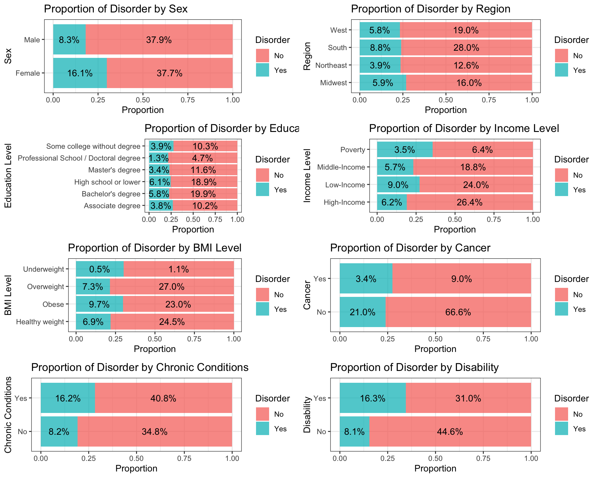
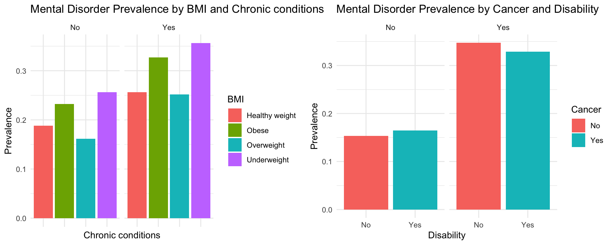

The National Health Interview Survey (NHIS) is a vital source of information on the health of the civilian noninstitutionalized population of the United States. It is conducted by the National Center for Health Statistics (NCHS), which is part of the Centers for Disease Control and Prevention (CDC). With its comprehensive coverage of demographic, socioeconomic, and health-related factors, it provides an excellent platform for investigating the correlates of prevalent mental health disorders among adults, such as anxiety and depression. This study aims to Explore the Prevalence of Mental Disorder by Various Factors: Demographic, Socioeconomic, and Other Health Outcomes. Understanding these correlations can provide valuable insights into the determinants of mental health and inform public health policies and interventions.
The NHIS dataset for the year 2022 was acquired from the Center for Disease Control and Prevention website by directly downloading the CSV file, which is usually considered to be an reliable and original source: https://www.cdc.gov/nchs/nhis/2022nhis.htm
Upon downloading the dataset from the website, it was uploaded to a GitHub repository in CSV file format for the convenience of this project.
The original dataset has 27651 observations and
637 variables. Irrelevant columns were removed from the
dataset, retaining only pertinent information related to demographic
factors, socioeconomic factors, health outcomes, and mental health
disorders.
Demographic factors:
REGION: Household regionSEX_A: Sex of Sample AdultAGEP_A: Age of SA (top coded)Socioeconomic factors:
MAXEDUCP_A: Highest level of education of all the
adults in the SA’s familyRATCAT_A: Ratio of family income to poverty threshold
for SA’s familyOther health outcomes:
BMICAT_A: Categorical Body Mass Index, Public UseCANEV_A: Ever been told you had cancerHYPEV_A: Ever been told you had hypertensionCHLEV_A: Ever told you had high cholesterolARTHEV_A: Ever had arthritisDIBEV_A: Ever had diabetesCOPDEV_A: Ever been told you had COPD, emphysema, or
chronic bronchitis?VISIONDF_A: Difficulty seeingHEARINGDF_A: Difficulty hearingDIFF_A: Difficulty walking/stepsCOMDIFF_A: Difficulty communicatingCOGMEMDFF_A: Difficulty remembering/concentratingMental health disorders:
ANXEV_A: Ever had anxiety disorderDEPEV_A: Ever had depressionThe dataset dimensions, headers, footers, variable types, and summary statistics were checked. All variables were found to be numerical, referencing categorical values.
To facilitate analysis, relevant variables were categorized, such as
chronic conditions and disability status. Individuals with any chronic
conditions or disabilities were labeled ‘Yes’, while those without were
labeled ‘No’ or replaced with NAs. Column names were renamed for
clarity, and numerical categorical values were converted to factors in
the NHIS_df dataset.
Missing values were checked and found to be minimal in each variable.
Rows with missing data were removed, resulting in a cleaned dataset with
10 variables and 26819 observations.
Summary statistics were computed for numerical variable, and proportional bar plots were generated to visualize the prevalence of mental disorder across different categories of categorical variables. Scatterplot, facet bar plots, and maps were created to explore the relationships between mental disorder prevalence and various demographic, socioeconomic, and health outcome factors.
Logistic regression analysis was utilized to investigate the association between mental disorder prevalence and various factors, including demographic, socioeconomic, and health outcome variables. The logistic regression model was applied to the dataset to ascertain the statistical significance of each predictor in predicting mental disorder prevalence. Through this analysis, the model assessed the significance of different predictors and evaluated the overall fit of the model.
Upon commencing data analysis, the initial step involved scrutinizing the dataset for anomalies or potential errors.
Firstly, a comprehensive summary of the numerical variable, such as Age, was generated across different demographic groups. The analysis revealed consistent distributions of age within each group, suggesting symmetry across the dataset. No significant deviations were observed, instilling confidence in the cleanliness and accuracy of the data.
Subsequently, a detailed examination of various categorical variables was conducted to assess their percentage distributions relative to the total. This exploration unearthed noteworthy observations regarding certain variables with disproportionately fewer observations in specific categories. The following variables and their corresponding categories were identified as requiring attention:
Income: Notably, the category denoting individuals living below the poverty threshold stood out due to its notably lower representation compared to other income categories.
Education: Categories such as “Professional School / Doctoral degree” exhibited a disproportionately smaller number of observations, warranting further consideration in subsequent analyses.
BMI: Individuals categorized as “Underweight” similarly displayed a lower representation within the dataset compared to other BMI categories.
Cancer: The presence of the category “Yes” indicating a history of cancer garnered attention due to its relatively infrequent occurrence.
While other categorical variables appeared to exhibit more even distributions across categories, the identified variables with fewer observations necessitate careful consideration to prevent underrepresentation bias during subsequent analyses.
| Region | Sex | Percentage | Min_Age | 1stQu_Age | Mean_Age | Median_Age | 3stQu_Age | Max_Age |
|---|---|---|---|---|---|---|---|---|
| Midwest | Female | 11.644730 | 18 | 39 | 54.71278 | 57 | 70 | 85 |
| Midwest | Male | 10.265111 | 18 | 36 | 52.33927 | 54 | 67 | 85 |
| Northeast | Female | 8.870577 | 18 | 39 | 54.26776 | 56 | 68 | 85 |
| Northeast | Male | 7.587904 | 18 | 37 | 52.88600 | 55 | 68 | 85 |
| South | Female | 20.228196 | 18 | 37 | 53.34359 | 55 | 68 | 85 |
| South | Male | 16.600171 | 18 | 37 | 52.39645 | 54 | 67 | 85 |
| West | Female | 13.031806 | 18 | 37 | 52.57339 | 53 | 68 | 85 |
| West | Male | 11.771505 | 18 | 36 | 51.01489 | 51 | 67 | 85 |
|
|
|
|
|
|
Proportional bar plots were created to visualize the prevalence of mental disorders across different categories of categorical variables. Significant differences were observed between categories for variables including Sex, Income, BMI, Disability, and Chronic conditions.

A scatterplot was utilized to explore the relationship between age and mental disorder prevalence. The analysis revealed a decreasing trend in mental disorder prevalence with increasing age, indicating that younger individuals are more prone to mental disorders.
Facet bar plots were generated to examine the relationship between mental disorder prevalence and demographic information such as region and sex. The plots highlighted higher prevalence rates among females compared to males, and individuals in the Midwest region of the US exhibited the highest prevalence rates.
A map was generated to visualize geographic information and identify regional differences in mental disorder prevalence. The analysis revealed that the Midwest region had the highest prevalence, with higher rates observed in the central area compared to the two sides.
Facet bar plots were also used to explore the relationship between mental disorder prevalence and socioeconomic factors such as income and education level. Lower income levels were associated with higher prevalence rates, while differences in prevalence rates between different education levels were less pronounced. Surprisingly, individuals with professional school/doctoral degrees and associate degrees in the poverty group exhibited significantly higher prevalence rates.
Lastly, facet bar plots were employed to investigate the relationship between mental disorder prevalence and other health outcomes such as BMI, Cancer, Chronic conditions, and Disability. Individuals with chronic conditions tended to have higher prevalence rates of mental disorders, while underweight and obese individuals were more likely to have mental disorders. Surprisingly, overweight individuals exhibited the lowest prevalence rates. Additionally, individuals with disabilities had significantly higher prevalence rates, while there was minimal difference in prevalence between individuals with a history of cancer and those without.

After fitting a logistic regression model to examine the relationship between mental disorder prevalence and various factors, it was found that only BMI and Education variables were not statistically significant (p > 0.05). Therefore, these variables were removed from the model to ensure the statistical significance of all remaining predictors. Subsequently, all variables in the adjusted model were found to be statistically significant.
However, the \(R^2\) value of approximately 0.0992 indicated that the model could only explain 9.92% of the total variance in mental disorder prevalence. Consequently, the model may not be suitable for predictive purposes but can still be utilized for inference.
Analysis of the model coefficients revealed several key insights. Positive coefficients for cancer, chronic conditions, and disability variables suggest that individuals with a history of these health conditions are more likely to experience mental disorders. Conversely, negative coefficients for region (Northeast, West, South), sex (male), and age variables indicate that individuals residing in the Midwest region, females, and younger age groups are more susceptible to mental disorders.
Additionally, the positive coefficient for income suggests that higher-income groups are less likely to experience mental disorders, whereas the highest coefficient observed for the Poverty variable implies a greater likelihood of mental disorders among individuals living below the poverty threshold. These findings align with the patterns observed in the visualization analyses conducted previously.
| Estimate | Std. Error | z value | Pr(>|z|) | |
|---|---|---|---|---|
| (Intercept) | -0.5056618 | 0.0786253 | -6.4312863 | 0.0000000 |
| RegionNortheast | -0.1031404 | 0.0491000 | -2.1006174 | 0.0356746 |
| RegionSouth | -0.2048554 | 0.0401370 | -5.1039069 | 0.0000003 |
| RegionWest | -0.1565803 | 0.0441038 | -3.5502654 | 0.0003848 |
| SexMale | -0.6814903 | 0.0314585 | -21.6631522 | 0.0000000 |
| Age | -0.0304421 | 0.0010697 | -28.4575541 | 0.0000000 |
| EducationBachelor’s degree | -0.0060753 | 0.0507496 | -0.1197120 | 0.9047113 |
| EducationHigh school or lower | -0.2282571 | 0.0505109 | -4.5189708 | 0.0000062 |
| EducationMaster’s degree | 0.1165315 | 0.0582569 | 2.0003053 | 0.0454673 |
| EducationProfessional School / Doctoral degree | 0.2387638 | 0.0779694 | 3.0622741 | 0.0021966 |
| EducationSome college without degree | -0.0206531 | 0.0552525 | -0.3737947 | 0.7085571 |
| IncomeLow-Income | 0.3344084 | 0.0434047 | 7.7044338 | 0.0000000 |
| IncomeMiddle-Income | 0.1866674 | 0.0435762 | 4.2836979 | 0.0000184 |
| IncomePoverty | 0.6319781 | 0.0583003 | 10.8400512 | 0.0000000 |
| BMIObese | 0.1735253 | 0.0386398 | 4.4908434 | 0.0000071 |
| BMIOverweight | 0.0174357 | 0.0391758 | 0.4450620 | 0.6562749 |
| BMIUnderweight | 0.2312358 | 0.1145889 | 2.0179602 | 0.0435954 |
| CancerYes | 0.2585924 | 0.0468865 | 5.5152839 | 0.0000000 |
| Chronic_condYes | 0.7768559 | 0.0393315 | 19.7515128 | 0.0000000 |
| DisabilityYes | 1.1354849 | 0.0335636 | 33.8308299 | 0.0000000 |
| Estimate | Std. Error | z value | Pr(>|z|) | |
|---|---|---|---|---|
| (Intercept) | -0.3577145 | 0.0614171 | -5.824344 | 0.0000000 |
| RegionNortheast | -0.1058668 | 0.0489484 | -2.162827 | 0.0305545 |
| RegionSouth | -0.2083896 | 0.0400540 | -5.202716 | 0.0000002 |
| RegionWest | -0.1610972 | 0.0439298 | -3.667151 | 0.0002453 |
| SexMale | -0.6921007 | 0.0312005 | -22.182329 | 0.0000000 |
| Age | -0.0314171 | 0.0010559 | -29.754589 | 0.0000000 |
| IncomeLow-Income | 0.2233186 | 0.0385813 | 5.788256 | 0.0000000 |
| IncomeMiddle-Income | 0.1323377 | 0.0420367 | 3.148147 | 0.0016431 |
| IncomePoverty | 0.4749499 | 0.0524329 | 9.058251 | 0.0000000 |
| CancerYes | 0.2722328 | 0.0467494 | 5.823235 | 0.0000000 |
| Chronic_condYes | 0.8028938 | 0.0385135 | 20.847078 | 0.0000000 |
| DisabilityYes | 1.1381029 | 0.0333557 | 34.120164 | 0.0000000 |
This study aimed to explore the relationships between the prevalence of anxiety disorder and depression and various demographic, socioeconomic factors, and other health outcomes using the NHIS dataset from 2022. Through comprehensive data exploration and modeling techniques, several key findings emerged.
Demographic Factors: Female individuals and those in the Midwest region exhibited higher prevalence rates of mental disorders compared to their counterparts. Additionally, younger age groups were more susceptible to mental disorders.
Socioeconomic Factors: Lower-income individuals, particularly those living below the poverty threshold, showed higher prevalence rates of mental disorders. While education level did not exhibit a significant relationship with mental disorder prevalence, higher-income levels were associated with lower prevalence rates.
Health Outcomes: Individuals with chronic conditions, disabilities, or a history of cancer were more likely to experience mental disorders. Notably, underweight and obese individuals exhibited higher prevalence rates, while overweight individuals showed lower rates.
The logistic regression model confirmed the statistical significance of these factors in predicting mental disorder prevalence. However, the model’s relatively low \(R^2\) value suggests that additional factors beyond those included in the model may contribute to mental disorder prevalence. Therefore, while the model may not be suitable for predictive purposes, the identified factors can inform public health interventions and policies aimed at addressing mental health disparities.
In summary, the findings of this study have significant implications for public health policies and interventions aimed at addressing mental health disparities. Targeted efforts are needed to address socioeconomic inequalities, provide accessible mental health services, and promote overall well-being across diverse demographic groups and geographic regions. By understanding the determinants of mental health disorders, policymakers and healthcare providers can implement effective strategies to mitigate risks and improve mental health outcomes for all individuals.